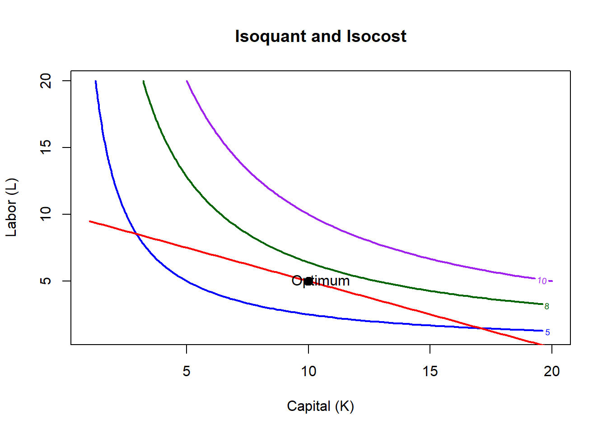
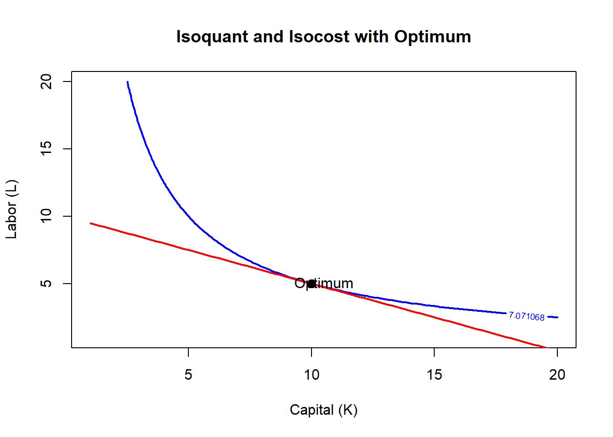
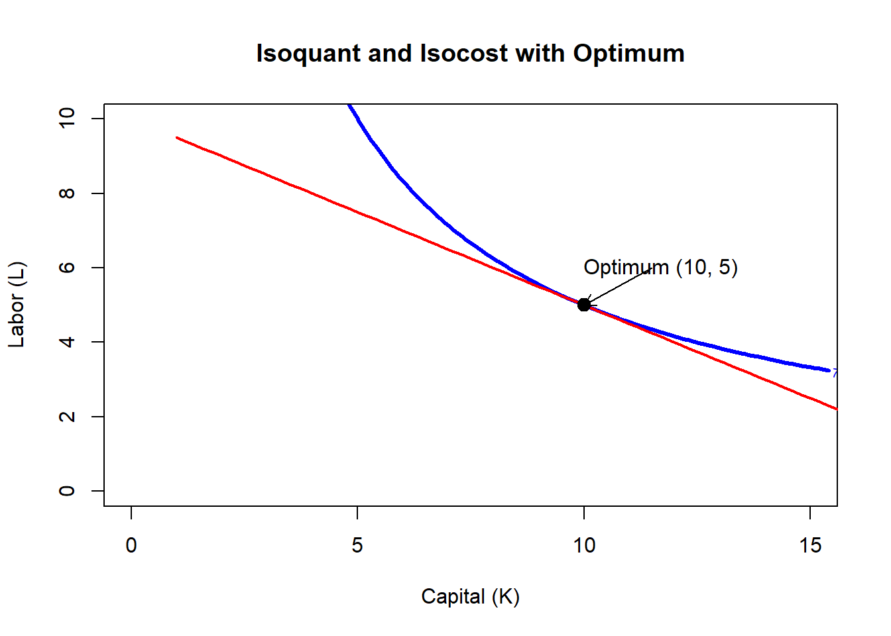
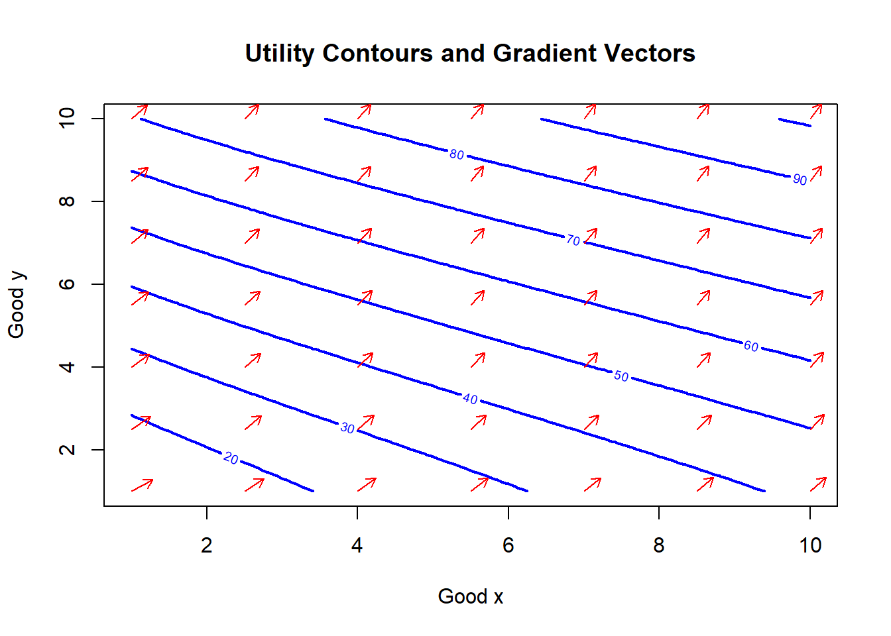
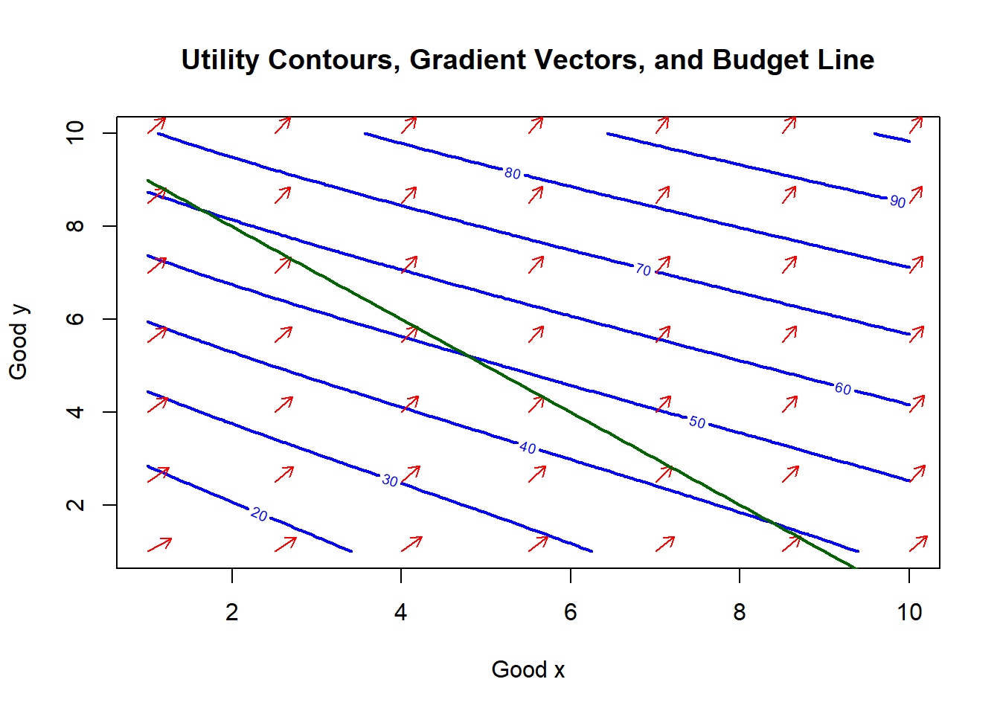
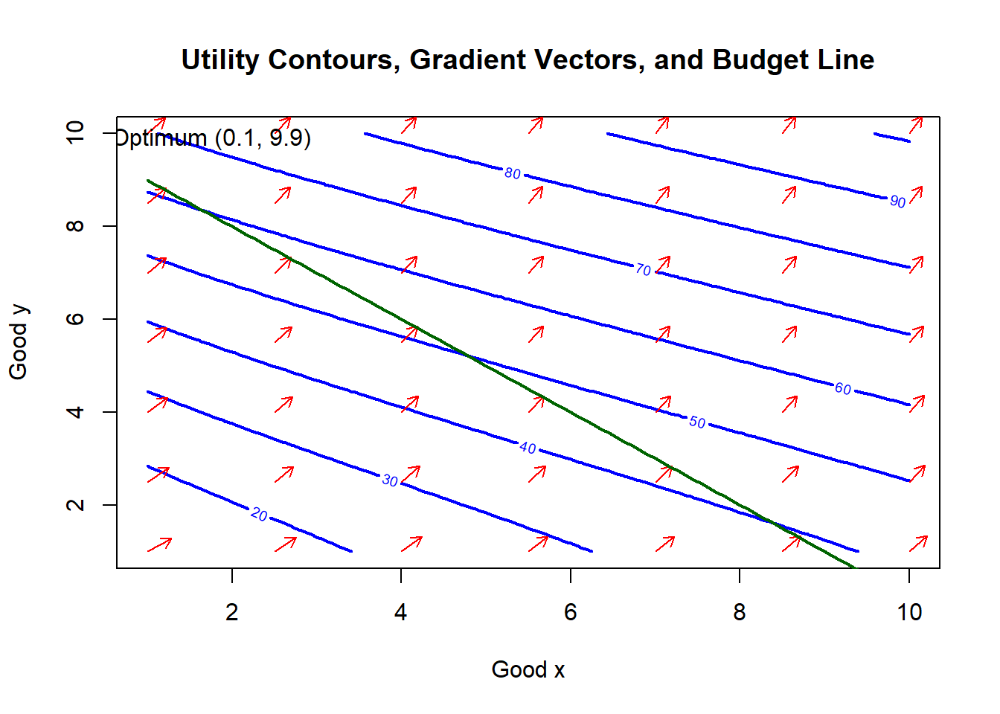

13 Plotting and Optimization in Microeconomic Models
Plotting helps us visualize economic relationships before solving optimization problems.
In economics, plots allow us to see:
how functions behave
where optimum points occur
the geometry of optimization (tangencies and curvature)
Many economic models involve two variables, so contour plot are useful.
13.1 Basic Contour Plot
\(f(x,y) = x^2+y^2\)
Each contour line represents
\(f(x,y)=c\)
which are circles around the origin.
13.1.0.1 Define the function
R can now evaluate the function for different values of \(x\) and \(y\)
13.2 Economic Example: Production Isoquants and Isocosts
Production Function
\(Q(K,L) = K^{0.5}L^{0.5}\)
where K=capital and L=labor
An isoquant represents combinations of inputs producing the same output
An isocost line shows all combinations of capital and labor that have the same total cost
\(C=rK+wL\)
where K=capital, L=labor, r=rental rate of capital, w=wage rate
The firm minimizes cost by choosing the input bundle where:
\(\frac{MP_L}{MP_K} = \frac{w}{r}\)
This occurs where the isoquant is tangent to the isocost line
13.2.0.1 Define the function
This function computes output for any combination of capital and labor. We need this because isoquants represent combinations that yield the same value of Q.
13.2.0.3 Compute output levels
Each element of Z represents \(Q(K,L)\) for a specific combination of inputs
13.2.0.4 Choose input prices and cost
Suppose: \(r=2\) \(w=4\) \(C=40\)
These represent the prices of inputs and firm’s budget for inputs.
13.2.0.5 Derive the Isocost Line
From \(C=rK+wL\)
solve for \(L\)
\(L=\frac{C-rK}{w}\)
For each value of capital, we compute the labor level that keeps cost constant. This generates the isocost line.
13.2.0.6 Compute the Optimal Input Bundle
\(Q=K^{0.5}L^{0.5}\)
The tangency condition gives
\(\frac{L}{K} = \frac{r}{w}\)
library(nleqslv)
foc_system <- function(x) {
K <- x[1]
L <- x[2]
c(
L / K - r / w,
r * K + w * L - C
)
}
sol <- nleqslv(c(8, 6), foc_system)
K_star <- sol$x[1]
L_star <- sol$x[2]
K_star## [1] 10## [1] 5foc_system() defines the two equations we want to solve simultaneously.
The first equation is the tangency condition.
the second equation is the isocost constraint.
nleqslv(c(8,6), foc_system) starts from an initial guess (8,6) and solves for K and L.
Using nleqslv is helpful because you will see that the optimum comes from solving a system of economic conditions, not from plugging numbers into a shortcut.
It is especially useful when:
the production function is more complicated,
the tangency condition is not easy to solve by hand,
or you want a consistent numerical method across topics.
13.2.0.7 Plotting
contour(K_vals, L_vals, Z,
levels = c(5, 8, 10),
col = c("blue", "darkgreen", "purple"),
lwd = 2,
xlab = "Capital (K)",
ylab = "Labor (L)",
main = "Isoquant and Isocost")
lines(K_vals, isocost, col = "red", lwd = 2)
points(K_star, L_star, pch = 19, col = "black", cex = 1.3)
text(K_star + 0.5, L_star, "Optimum", col = "black")
One more improvement: if you want the graph to show the actual tangency isoquant, set the contour level equal to the output at the optimum:
Q_star <- Q(K_star, L_star)
contour(K_vals, L_vals, Z,
levels = c(Q_star),
col = "blue",
lwd = 2,
xlab = "Capital (K)",
ylab = "Labor (L)",
main = "Isoquant and Isocost with Optimum")
lines(K_vals, isocost, col = "red", lwd = 2)
points(K_star, L_star, pch = 19, col = "black", cex = 1.3)
text(K_star + 0.5, L_star, "Optimum", col = "black")
The blue curve is the isoquant, every point on that curve produces the same output level. The curve slopes downward because inputs can substitute for each other.
The red line is the isocost. It shows all combinations of capital and labor that cost the same amount. The slope is the price ratio of inputs. So, along the red line, the firm spends the same total cost.
The black point labeled Optimumis where the isoquant and isocost touch each other (tangency). This is the cost-minimizing input bundle.
The numbers, \(K^*=10; L^*=5\) is the combination that produces the output at the lowest possible cost given input prices.
13.2.0.8 Why the Tangency Matters
If the firm moved:
Above the isocost
- Production is possible but cost is higher
Inside the isoquant
- Cost is lower but output is insufficient
The tangency point is the only bundle that produces the required output at minimum cost.
13.2.0.8.1 Graph looks strange
Since the Capital range goes to 20 and labor goes to 15, let’s make the tangency clearer.
# Output level at optimum
Q_star <- Q(K_star,L_star)
# Plot isoquant
contour(K_vals, L_vals, Z,
levels=c(Q_star),
col="blue",
lwd=3,
xlab="Capital (K)",
ylab="Labor (L)",
xlim=c(0,15),
ylim=c(0,10),
main="Isoquant and Isocost with Optimum")
# Add isocost
lines(K_vals[valid], isocost[valid],
col="red",
lwd=2)
# Add optimum point
points(K_star, L_star,
pch=19,
col="black",
cex=1.4)
# Arrow to optimum
arrows(K_star+1.5, L_star+1,
K_star, L_star,
length=0.1)
# Label optimum
text(K_star+1.7, L_star+1,
paste0("Optimum (", round(K_star,1), ", ", round(L_star,1), ")"),
col="black")
13.3 Utility Contour and Gradient Vectors
This helps visualize consumer preferences before solving the optimization problem.
We will:
Define a utility function
Plot indifference curves (contours)
Compute gradient vectors (marginal utilities)
Overlay both on the same graph
13.3.0.1 Define the function
\(U(x,y) = Ax^{\alpha}+By^{\beta}\)
where A and B are importance weights for goods x and y, \(\alpha\) and \(\beta\) are curvature parameters that determine how utility changes as consumption increases.
13.3.0.3 Evaluate utility for all bundles
This creates a matrix for creating a contour plot of the combinations of x and y.
13.3.0.4 Gradient (Marginal Utilities)
The gradient shows how utility changes when consumption increases.
Mathematically:
\(\nabla U(x,y) = (\frac{\partial U}{\partial x}, \frac{\partial U}{\partial y})\)
These are marginal utilities.
13.3.0.5 Compute Gradient Values on a Grid
xg <- seq(1, 10, by = 1.5)
yg <- seq(1, 10, by = 1.5)
grid <- expand.grid(x = xg, y = yg)
grad_x <- A * alpha * grid$x^(alpha - 1)
grad_y <- B * beta * grid$y^(beta - 1)Why is there alpha - 1 and beta-1?
This comes from the power rule…when differentiating \(x^{\alpha}\)
expand.grid() creates coordinate pairs like
These show the direction utility increases fastest.
13.3.0.6 Rescale Gradient Arrows
Raw gradients can be very large or very small. To make the plot readable, we scale them.
arrow_len <- 0.4
norm <- sqrt(grad_x^2 + grad_y^2)
ux <- arrow_len * grad_x / norm
uy <- arrow_len * grad_y / normarrow_len sets the length we want the arrows to have on the plot.
So every arrow will be scaled so its length is about 0.4 units.
Why we do this?
If we plotted raw gradients, arrows might be:
extremely long near large values
extremely short near small values
This would make the graph messy or unreadable.
So we control arrow length manually. You can use closer to 0 for shorter arrows and 1 and more for longer arrows. It affects the appearance of the arrows.
norm <- sqrt(grad_x^2 + grad_y^2) This computed the length of each gradient vector since we want to normalize the arrows.
Normalization means:
keep the direction
control the size
To do that we must know the original vector length.
Do we need the ^2?
Yes.
The squares come from the Euclidean distance formula.
Without squaring we would not get the correct vector length.
Example:
Vector = (3,4)
True length:
\(\sqrt{3^2+4^2}=5\)
If we did not square:
\(\sqrt{3+4}\)
that would be wrong.
So the squares are mathematically required.
ux <- arrow_len * grad_x / norm creates the horizontal component of the scaled arrow. That makes the vector length equal to 1. This is called normalizing the vector. Now the vector shows only direction, not magnitude. Multiplying by arrow_len sets the final arrow size. So every arrow has the same length. The same is happening with uy
13.3.0.7 Plot Contours and Gradient Arrows
contour(x_vals, y_vals, Z,
nlevels = 8,
col = "blue",
lwd = 2,
xlab = "Good x",
ylab = "Good y",
main = "Utility Contours and Gradient Vectors")
arrows(grid$x, grid$y,
grid$x + ux, grid$y + uy,
length = 0.08,
col = "red")
Each contour represents an indifference curve. All points on that curve give the same level of satisfaction. The arrows represent the gradient of utility. They show the direction of steepest increase in utility.
The arrows point up and to the right because it’s moving toward larger bundles, increasing satisfaction. Always remember:
The gradient vector is always perpendicular to the contour line. That is why the arrows cross the blue curves at right angles.
So what does it tell you?
- Utility increases northeast, meaning higher satisfaction occurs with more goods.
- Preferences are smooth, meaning small changes in consumption change utility gradually.
- Arrows look similar everywhere because exponents are close to 1. If exponents were very different, the arrows would not look that similar.
13.3.1 Let’s Add Budget Line
\(p_xx+p_yy = M\)
where x and y are quantities of good x and y, \(p_x\) and \(p_y\) are prices of goods x and y \(M\) is income. The consumer wants the highest possible utility without spending more than income.
\(p_x = 1; p_y = 1; M=10\)
This computes the budget line. For every value of \(x\), R calculates the corresponding value of y that exactly uses all income. We only keep the part of the line where y is nonnegative
13.3.1.1 Plot
contour(x_vals, y_vals, Z,
nlevels = 8,
col = "blue",
lwd = 2,
xlab = "Good x",
ylab = "Good y",
main = "Utility Contours, Gradient Vectors, and Budget Line")
arrows(grid$x, grid$y,
grid$x + ux, grid$y + uy,
length = 0.08,
col = "red")
lines(x_vals[valid_budget], budget_y[valid_budget],
col = "darkgreen",
lwd = 2)
13.3.1.2 Solve the optimal bundle
library(nleqslv)
system_eq <- function(z){
x <- z[1]
y <- z[2]
c(
(A*alpha*x^(alpha-1))/(B*beta*y^(beta-1)) - px/py,
px*x + py*y - M
)
}
sol <- nleqslv(c(4,6), system_eq)
x_star <- sol$x[1]
y_star <- sol$x[2]
x_star## [1] 0.1010205## [1] 9.89897913.3.1.3 Add the optimum to the plot
contour(x_vals, y_vals, Z,
nlevels = 8,
col = "blue",
lwd = 2,
xlab = "Good x",
ylab = "Good y",
main = "Utility Contours, Gradient Vectors, and Budget Line")
arrows(grid$x, grid$y,
grid$x + ux, grid$y + uy,
length = 0.08,
col = "red")
lines(x_vals[valid_budget], budget_y[valid_budget],
col = "darkgreen",
lwd = 2)
points(x_star, y_star,
pch = 19,
col = "black",
cex = 1.4)
text(x_star + 0.3, y_star,
paste0("Optimum (", round(x_star,2), ", ", round(y_star,2), ")"),
pos = 4)
What this shows is that the consumer buys mostly one good.